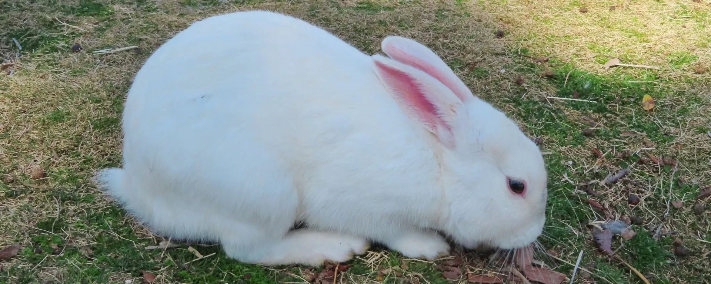
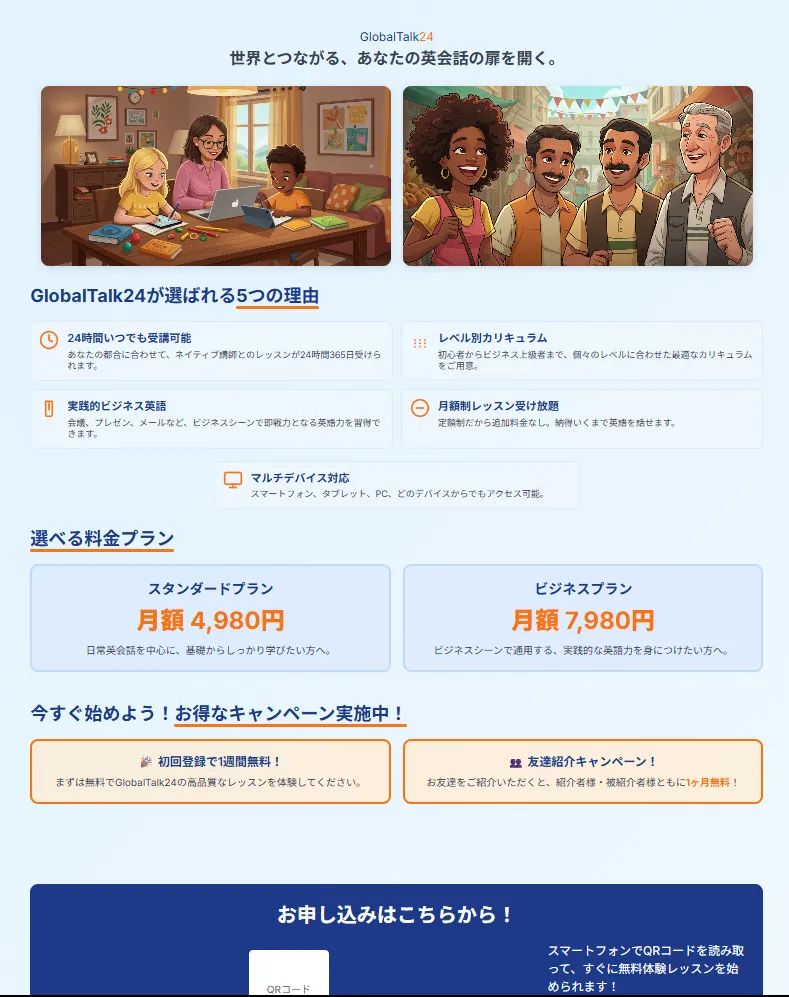
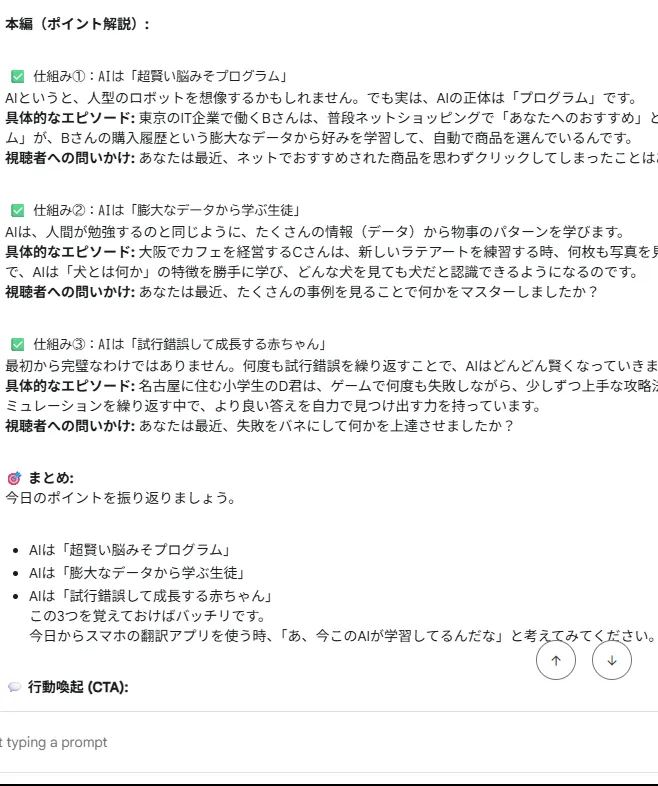

Portfolio
これまでに制作した作品の一部をご紹介します。AIイラストのカードはクリックで詳細なギャラリーを開きます。

NPO法人「Fuwamoco PROJECT」公式サイト
うさぎの保護活動を行う架空NPO法人の公式サイトを、企画・デザイン・実装まで一貫して制作。JavaScript製の3マッチパズルも搭載。

AIキャラクターデザイン集
Stable Diffusionを使用し、様々なテーマのオリジナルキャラクターを制作しました。


AIチラシ
AIを活用した新しい作業のカタチを提案する、新しいチラシです。企画からデザイン、イラスト制作まで一貫して手掛けました。
オリジナルLINEスタンプ制作
Stable Diffusionを活用し、企画からイラスト制作、申請、リリースまで一貫して行いました。現在、LINE STOREにて販売中です。

YouTubeショート動画シナリオ制作
教育・解説系のYouTubeショート動画向けに、視聴者の興味を引きつけ、最後まで見てもらえる構成のシナリオをGPTsを活用して制作。

YouTubeチャンネル「ChromaのPC学習部屋」
AIやPCの難しいスキルを、初心者でも楽しく、そして挫折せずに学べることを目指した動画コンテンツを配信しています。
YouTubeチャンネル「Chromaの自由部屋」
AIで生成した音楽作品の発表や、日々の制作活動、そして私の「好き」を自由に発信する、パーソナルな活動の拠点です。

インタラクティブ学習アプリ（企画・設計）
特定のスキルを、クイズや実践形式で学べるWebアプリケーションの概念設計とUI/UXデザインを行いました。
AIと友達になろう！体験アプリ
PC操作に不慣れな方でも、クリック操作だけでAIの面白さを体験できるWebアプリケーション。HTML/CSS/JSで開発。
(仮)Kindle向け短編小説
AI(GPTs)を活用し、プロット作成から執筆までを行ったオリジナル短編小説。
適応型タスク管理システム
利用者のスキルレベルや体調に応じて、タスクの難易度や量をAIが提案するシステムの概念設計とプロトタイプ開発。